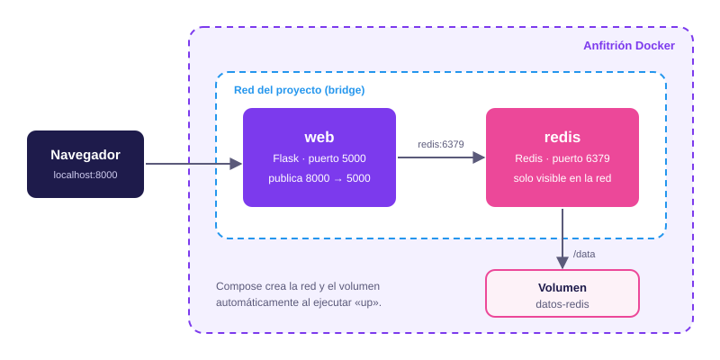

Módulo 04
Redes, volúmenes y Compose
Cómo se comunican los contenedores, cómo guardan datos y cómo se define una aplicación completa en un solo archivo.
Redes
Una aplicación real rara vez es un solo contenedor: suele haber un servidor web, una API y una base de datos que deben comunicarse. Docker resuelve esto con redes virtuales a las que se conectan los contenedores. Cada red usa un driver que define cómo funciona:
| Driver | Cómo funciona |
|---|---|
bridge |
El predeterminado. Red privada dentro de un solo anfitrión: los contenedores se ven entre sí y salen a internet mediante NAT. |
host |
El contenedor usa directamente la red del anfitrión (en Linux). No hay aislamiento de red ni hace falta publicar puertos. |
none |
Sin red, salvo la interfaz local. Es el máximo aislamiento. |
overlay |
Conecta contenedores que se ejecutan en varios anfitriones. Se usa con Docker Swarm. |
macvlan |
Da al contenedor su propia dirección MAC e IP en la red física, como si fuera otro equipo. |
Redes definidas por el usuario
Existe una diferencia importante dentro de bridge. En la red por defecto, los
contenedores solo pueden encontrarse por dirección IP. En una red creada por
ti, Docker incluye un DNS interno y los contenedores se localizan por su nombre.
Además, solo se ven entre sí los contenedores conectados a esa red, lo que mejora el
aislamiento.
docker network create red-app
docker run -d --name db --network red-app \
-e POSTGRES_PASSWORD=secreto postgres:16
docker run -d --name api --network red-app miapi:1.0
docker network ls
docker network inspect red-appCon esto, el contenedor api puede conectarse a la base de datos usando simplemente
db como nombre de servidor.
Publicar puertos
Los contenedores de una misma red se comunican sin publicar nada. Solo hay que publicar un puerto
con -p cuando algo debe ser accesible desde fuera. El formato es
puerto-del-anfitrión:puerto-del-contenedor:
docker run -d -p 8080:80 nginx
docker run -d -p 127.0.0.1:8080:80 nginxEl primer comando deja el servicio accesible desde toda la red. El segundo lo limita al propio equipo, una buena práctica para servicios de desarrollo y bases de datos.
iptables, así que un puerto publicado puede quedar accesible aunque un firewall
como ufw parezca bloquearlo. Publica solo lo necesario y limita con
127.0.0.1 cuando puedas.
Volúmenes
Como vimos en el módulo anterior, la capa de escritura de un contenedor desaparece cuando se elimina. Para datos que deben sobrevivir (bases de datos, archivos subidos por usuarios) hay tres mecanismos:
| Tipo | Dónde se guarda | Uso típico |
|---|---|---|
| Volumen con nombre | En una zona gestionada por Docker | Datos de producción, como bases de datos |
| Bind mount | En una carpeta concreta del anfitrión | Desarrollo: ver los cambios del código al instante |
tmpfs |
En la memoria RAM (solo Linux) | Datos temporales o sensibles que no deben escribirse en disco |
Ejemplo con un volumen con nombre para PostgreSQL:
docker volume create datos-db
docker run -d --name db \
-v datos-db:/var/lib/postgresql/data \
-e POSTGRES_PASSWORD=secreto \
postgres:16
docker volume ls
docker volume inspect datos-dbEliminar el contenedor con docker rm no borra un volumen con nombre. Si creas un
contenedor nuevo y le montas datos-db, encontrará los datos intactos. Esa
separación entre el contenedor (desechable) y los datos (persistentes) es lo que permite
actualizar una aplicación sin perder información.
Para desarrollo, un bind mount enlaza una carpeta de tu equipo con el contenedor:
docker run -d -p 3000:3000 -v "$(pwd)":/app miapp:1.0Docker Compose
Levantar una aplicación con varios contenedores a mano exige repetir muchos comandos largos. Docker Compose permite describir toda la aplicación (servicios, redes, volúmenes y variables) en un archivo YAML y controlarla con un solo comando.

Estas son las ideas clave:
- Servicios: cada entrada bajo
serviceses un contenedor (o varias réplicas del mismo). - Red automática: Compose crea una red para el proyecto y conecta en ella todos los servicios, que se encuentran por el nombre del servicio.
- Volúmenes: se declaran una vez y se montan donde hagan falta.
- Variables: Compose lee automáticamente un archivo
.envpara sustituir valores como${DB_PASSWORD}, y así los secretos no se escriben en el YAML.
Los comandos más usados son:
docker compose up -d --build # construir y arrancar en segundo plano
docker compose ps # ver el estado de los servicios
docker compose logs -f web # seguir los registros de un servicio
docker compose down # detener y eliminar contenedores y red
docker compose down -v # además, eliminar los volúmenesdocker compose (con espacio),
integrado en Docker; la herramienta antigua docker-compose ya no recibe
mantenimiento. Y el campo version: que aparece en tutoriales antiguos ya es
obsoleto y puede omitirse.
Laboratorio: contador de visitas
Vamos a construir una aplicación con dos servicios: una web en Python (Flask) que cuenta las visitas y una base de datos Redis donde se guarda el contador. Crea una carpeta nueva con estos cuatro archivos.
app.py
import os
import redis
from flask import Flask
app = Flask(__name__)
cache = redis.Redis(host=os.environ.get("REDIS_HOST", "redis"), port=6379)
@app.route("/")
def inicio():
visitas = cache.incr("visitas")
return f"Esta página se ha visitado {visitas} veces.\n"
if __name__ == "__main__":
app.run(host="0.0.0.0", port=5000)requirements.txt
flask
redisDockerfile
FROM python:3.12-slim
WORKDIR /app
COPY requirements.txt .
RUN pip install --no-cache-dir -r requirements.txt
COPY app.py .
EXPOSE 5000
CMD ["python", "app.py"]Observa que aplica lo visto en el módulo anterior: las dependencias se instalan antes de copiar el código para aprovechar la caché.
compose.yaml
services:
web:
build: .
ports:
- "8000:5000"
environment:
REDIS_HOST: redis
depends_on:
- redis
redis:
image: redis:7-alpine
command: redis-server --appendonly yes
volumes:
- datos-redis:/data
volumes:
datos-redis:Fíjate en que web localiza la base de datos con el nombre redis, el
mismo nombre del servicio. La opción --appendonly yes hace que Redis registre cada
escritura en disco, dentro del volumen.
Ejecútalo
- Desde la carpeta del proyecto, ejecuta
docker compose up -d --build. - Abre
http://localhost:8000en el navegador y recarga varias veces: el contador sube. - Ejecuta
docker compose downy luegodocker compose up -dotra vez. Los contenedores son nuevos, pero el contador continúa donde estaba gracias al volumen. - Ejecuta
docker compose down -vy vuelve a levantar la aplicación. Ahora el contador empieza de cero, porque el volumen se eliminó.
depends_on: solo controla el orden de arranque, no garantiza
que Redis ya esté listo para recibir conexiones. Para eso se añade un healthcheck
al servicio y la condición service_healthy. En esta práctica no hace falta, pero en
una base de datos real conviene incluirlo.
Más allá de un servidor
Compose está pensado para un solo anfitrión. Cuando una aplicación necesita ejecutarse en varios servidores, con réplicas, recuperación automática ante fallos y actualizaciones sin interrupciones, se usa un orquestador.
| Herramienta | Alcance | Cuándo usarla |
|---|---|---|
| Docker Compose | Un solo anfitrión | Desarrollo local, pruebas y aplicaciones pequeñas |
| Docker Swarm | Un clúster de anfitriones | Orquestación sencilla, integrada en Docker. Sigue disponible, aunque su adopción es mucho menor que la de Kubernetes |
| Kubernetes | Un clúster de anfitriones | Estándar de facto en producción: escalado automático, autorrecuperación y despliegues progresivos, con mayor complejidad |
Kubernetes nació en Google (2014) y hoy lo mantiene la CNCF. No sustituye a Docker: orquesta contenedores que se construyen con las mismas imágenes estándar de la OCI que vimos en los módulos anteriores. Por eso lo aprendido aquí sigue siendo válido al dar el salto.